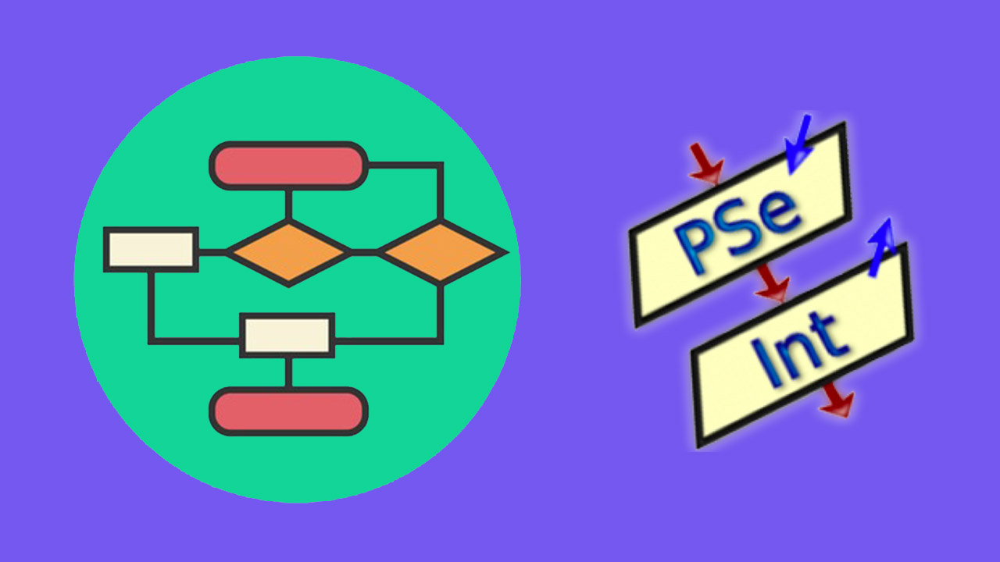

INFORMACIÓN SOBRE PSEINT
¿Qué es PSeInt?
Es una herramienta educativa que ayuda a los estudiantes a aprender
los fundamentos de la programación utilizando pseudocódigo en español.

Características
- Permite escribir algoritmos en pseudocódigo.
- Incluye un editor con sugerencias y resultados.
- Ofrece un entorno para ejecutar y probar algoritmos.
- Genera diagramas de flujo a partir de los algoritmos.
- Es gratuito y de código abierto.
Ventajas
- Fácil de usar para principiantes.
- Disponible en español.
- No requiere conocimientos previos de programación.
- Ayuda a comprender la lógica antes de usar un lenguaje real.
Desventajas
- No es un lenguaje de programación real.
- Limitado a la enseñanza básica de algoritmos.
- No se usa en entornos profesionales.

Para aprender a como usar Psint desde cero, acontinuación le dejo un enlace.
MAS INFORMACION